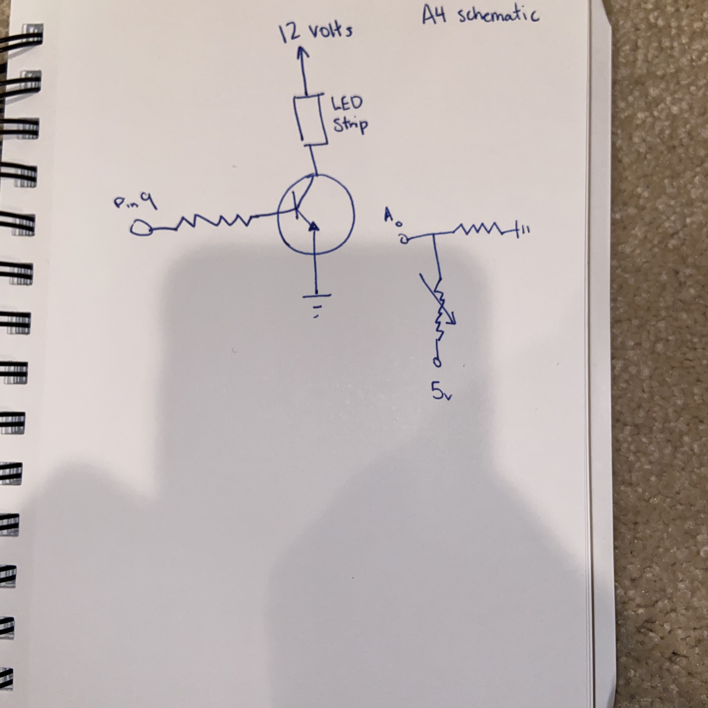

Assignment 4: Higher Voltages!

^A picture of the circuit.
Here is all the documentation for assignment 4!
Below is the GIF of the circuit running.

Below is an image of the schematic

3.6V drop per white LED. 3 LEDs per segment of LED strip.
3.6V * 3 = 10.8V drop over the three LEDs.
12V (from power) = 10.8V (drop from LED) + V drop of resistor --> Resistor = 1.2V drop
Resistor on LED segment says '241' --> 240 Ohm resistor.
1.2/240 = 0.005A of current per LED segment
used 102 LEDs, or 34 segments --> 0.005A * 34 = 0.17A of current for my LED strip.
For the photoresistor, 10k ohm resistor used to make sure the current was fully grounded when the switch is off.
Below is a snippet of the code used in Arduino.
const int photo = 0; //setting up A0
const int led = 9; // setting up led at pin 9
int photo_val; // initial value
void setup() {
// put your setup code here, to run once:
pinMode (led,OUTPUT); // setting up led output
analogWrite(led, 200); //making brightness 200 out of 255
}
void loop() {
// put your main code here, to run repeatedly:
photo_val = analogRead(photo); //photores value stored in variable
int led_output = map(photo_val, 0, 1023, 0, 255); // translating photoresistor values
analogWrite(led, led_output); // writing mapped led brightness to led
delay(500); // make change noticable
}